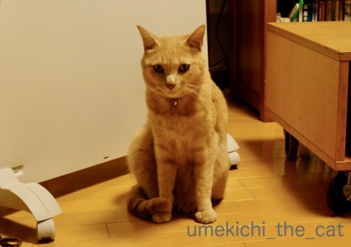
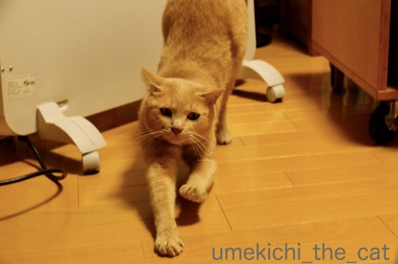
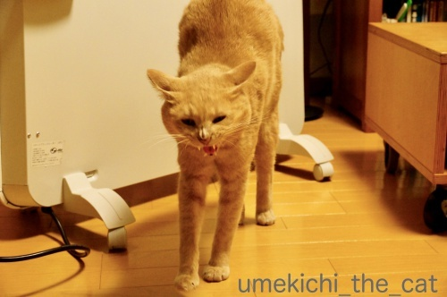
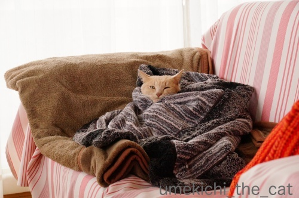
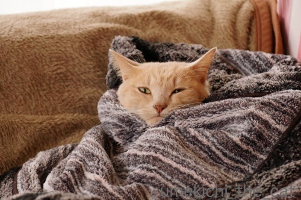
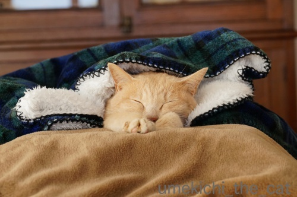
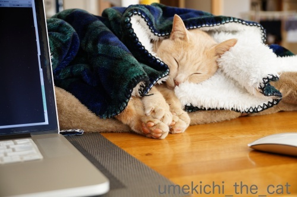
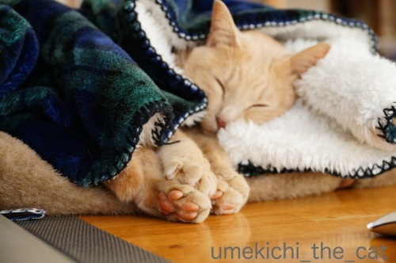

梅吉の巣ごもり冬ごもり [梅吉]
今年も白い恋人の季節になりました。



ある程度あったまったら梅吉さんは巣に帰ります。

埋まってます( ´艸｀)

この中に湯たんぽを仕込んであります。
低温やけどしない様にお湯は少し冷ましてブランケットの一番下に。
プラスチックの湯たんぽはお湯の温度がすぐ下がっちゃうので
（しかもダイレクトに熱い）
うちではシリコン製の湯たんぽを愛用しています。
お湯が冷めにくいし体へのあたりも柔らかい。
保温性で見ると陶器の湯たんぽなのでしょうかあれは重くて使いにくいですw
去年の記事を見ていたらパネルヒーターを出したのは11月の初め。
今年はわりと暖かかったので遅めの出番となりました・・・
が、使ったのは2日間ほど。
一気に寒くなってきたので早々にエアコン暖房に切り替えました(⌒_⌒;
こうなるともうエアコンなしではいられない・・・
（道産子は寒さに弱いんですよwww）
梅吉さんの巣はもう一つ。
こちらはかまってちゃんになった時の仮設なんですが・・・

私のPCスペースの目の前に設置＾＾
おててびよ〜んからの

寝返りを打つとこんなことになることも！0(≧▽≦)0

ピントを我が家の四宝（至宝）に合わせてみました！
時々肉球をむにゅむにゅっとお触りしながらのPCタイムになります＾＾
ほかほか梅吉の肉球はあったかいです。
タグ講座

カフェオレ色の梅吉

梅吉 2023年8月10日 永眠


梅吉と出会った譲渡会

犬猫の理由なき殺処分ゼロ
妄想広告
UMEKICHI 光

爆発的に早い！
時々攻撃的！
Thanks to Mr.Boss365
爆発的に早い！
時々攻撃的！
Thanks to Mr.Boss365

梅吉さん、ポカポカ気持ちいいにゃあ^^
by ニコニコファイト (2018-11-22 06:22)
湯たんぽが仕込まれてるんだ、暖かくていいね～
by 英ちゃん (2018-11-22 07:15)
前のパネルヒーターと後ろのオイルヒーター、
両方使ってるんですかね？
でないと裏側は暖かくないような？
リンク、繋がってましたよ＾＾
by ぽちの輔 (2018-11-22 07:27)
ニコニコファイトさん＞
梅吉がポカポカしてると幸せな気持ちになります＾＾
英ちゃんさん＞
私も湯たんぽ大好きなんですが（電気毛布が苦手）
梅吉にも大好評です＾＾
湯たんぽ仕込まないと恨めしい顔されますwww
ぽちの輔さん＞
確か同じパネルヒーターお持ちでしたよね。
基本裏側のオイルヒーターを使っているので
いつも裏向きにおいてあります＾＾
リンク、記事書いた後確認した時は繋がってたんですが
今朝おかしくなっていて・・・
なおしたらまた繋がる様に！ソネブロ怪しい説が私の中で浮上中www
by ちぃ (2018-11-22 07:41)
体がポカポカになって巣に帰る？梅吉さん♪
チラリと見せるキバがたまりません(*‘∀‘)
そして顔だけ出して埋まってるぅ～！
湯たんぽがあるのですね！
湯たんぽ買おうかと思ったのですが
プラスチックはダメなのですね・・・
初めて知りました！！
ＰＣしながらの眺めは最高ですねぇ～！！
by きぃ (2018-11-22 07:48)
白い恋人ー(≧∀≦)
今年もそんな季節になったんですね。
肉球、触ってみたいー！！！
by よーちゃん (2018-11-22 10:21)
梅吉さん蹲ってヌクヌクですね！
良い感じでおねむになっていますね(^^)
by ma2ma2 (2018-11-22 10:32)
おはようございます。
梅吉君！！最高に素敵なソファー寝床？巣ですね。
埋まった感じが？小生のお爺ちゃんを思い出しました。優雅です。
PCスペース横で寝てくれる感じ良いです。
マウスクリックからの肉球むにゅむにゅっは・・・
心温まる最高な贅沢です！？(=^･ｪ･^=)
by Boss365 (2018-11-22 11:21)
道産子は寒さに弱いんですかぁ!? 暖房がしっかりしてるからでしょうか。
梅吉さんはおかーさんの見えるところで安心してぬくぬく。きっと時々お布団を直してあげてますね。
by zombiekong (2018-11-22 11:44)
か・・・可愛い！ただ、ただ、可愛い～♪ 冬のぬくぬくにゃんこって、なんでこんなに・・・♡
by Ginger (2018-11-22 11:56)
うちもいつでも使えるようにファンヒーターを出して
灯油も買ってきました＾＾
今のところまだ使ってませんが、明日は「木枯らし一番」の予報なので使うかも^^;
梅吉さんの巣、ぬくぬくで素敵ですねぇ(^O^)
ＰＣしながら、可愛い寝顔を眺めたり肉球をぷにぷに出来るなんて
幸せな時間で羨まし過ぎます(^-^)
大御所がソファや鍋に寝床を替えたので、寂しくＰＣしてます(T_T)
あっ、でも時々（かみさん８：私２くらい）ノエルに空気椅子修行をさせてもらえますｗ
by ニッキー (2018-11-22 12:01)
ブランケットに埋もれる梅吉さん、超リラックスモード♪
我が家も今週から湯たんぽ作り始めました(#^^#)
フツーのプラスチック製なので、タオルで包む→専用カバーにいれる→さらに薄いひざ掛けでグルグル巻き→コタツに入れています^^;
そうか～シリコン製があるのですね！
ホームセンターで探してみます^^
by ゆきち (2018-11-22 13:01)
梅吉さん、すにかえる前はパネルヒーターの前にいるのですね（納得ww）
1のす、梅吉さんはヌックヌクに埋まってますね（笑）
口元に暖かさが感じられて、無の境地に見えます。
PCの目の前では、可愛い顔して仰向けに寝てますね。
横向きからの〜ピンクの肉球、集団でR。
一度にたくさんの、あったか肉球。
プニュプニュですか（笑）
by kiki (2018-11-22 13:06)
白い恋人が今年もやってきましたね。
巣ごもりの梅吉くん♪
なんかこんなのなかったっけ。
椅子に座ったみたいな恰好で首から下をすっぽり包んで汗をかくみたいなマシンｗ
梅吉くん、湯たんぽまで入れてもらって至れり尽くせりだにゃ(*^-^*)
PCの側に仮設の巣もいいね。
くるみもタラも私のPCの上で暖を取ってます。
どかそうとしても踏ん張って降りてくれないの～。PC使わせて～っ！
by emi (2018-11-22 13:30)
ブランケットに埋もれる梅吉さん暖かそうです。
みなさん猫様の暖房にとても気を使ってらっしゃるのですね。
うちは私が出かけるときに暖房器具はすべて電源をOFFするので
基本うちのお嬢様達はベットの上かついていないコタツの中で過ごします（笑
by marimo (2018-11-22 16:54)
ブランケットから出ている梅吉さんの肉球が可愛いですね(^^)
こっちは明日から雪の予報です。半外猫さん達の姿をあまり見かけなくなるのが寂しい季節です・・・。
by kou (2018-11-22 17:11)
白い恋人さんの季節になったのですね。
すっぽりくるまって顔だけだしてるの、可愛い～！
うちのは顔が見えなくなることが多くて～ちょっとつまんなかった＾＾；
ブランケットから出ている肉球むにゅむにゅだなんて、楽しいPCタイムですね♪
by sana (2018-11-22 19:35)
あたたかそうだね〜〜^^
梅吉君はこうやって巣籠もりしても
静電気パチパチくんにはならない？
あお＆うみは、ブランケットにくるまりすぎると
静電気ぱちぱちになるのｗｗ
触るとバチンってなって痛いときがあります(笑)
by リュカ (2018-11-22 20:39)
巣っこでウトウトする梅吉さん、気持ち良さそうですね♪ ^^)
肉球、触ろうとすると怒られるので羨ましいですー。
by yes_hama (2018-11-22 21:29)
一年前の記事に私もコメントしている事に感激しました。
生きてて良かった。
ピントをそこに合わせるのは、考えた事もないです。
やっぱり生きてて良かった＾＾
by riverwalk (2018-11-22 23:16)
巣ごもりの梅吉さんなんて可愛いの！！
パソコンしながら肉球を拝めるとは梅吉くんサービス過剰です(*^^*)
by palpal (2018-11-23 14:41)
グルグル巻きで巣に入ってる梅吉さん、
可愛い～(*´ω｀*)♡
うちも冬支度、完了しました(≧▽≦)
あかりの部屋、昼間はオイルヒーター、夜はホットカーペット
にあかりのコタツ乗せてるんですけど、
コタツにもぐりこんでる時に、肉球触ろうとしたら
パチンと叩かれました＾＾；
梅吉さんは優しいな～＾＾
by マーヤ (2018-11-23 16:08)
あ、オネム＆肉球、ころしにかかっていますね♪
急に寒くなってきましたもんね~。
by ふにゃいの (2018-11-23 17:48)
丸まって埋もれている梅吉さんも
愛らしいわ～♡♡♡参考までに、
新国立美術館のボナール展HPで
「びよーん猫」の写真を募集中
なのを発見！インスタグラムを
されていたら前回のお写真など
バッチリなのでは・・(*^O^*)
http://bonnard2018.exhn.jp/cat/#instaArea
by うりくま (2018-11-23 21:14)
（＾￢＾) あまりの可愛さにヨダレが…。
by あとりえＳＡＫＡＮＡ (2018-11-24 16:05)
きぃさん＞
湯たんぽは私が愛用していたのですが
梅吉にも大好評で今では梅吉優先で使ってます＾＾
私は時々予備の固ーいプラスチックのを使っていますが
やっぱりシリコン製の方が良いかなぁと思っています！
お好みは個人差もあると思うのでお店で触ってみてくださいね(^_－)☆
PC横で肉球の大サービスは最高なんですが
PCになかなか集中できませんwww
よーちゃん＞
最近まで暑い暑いと言っていた様に思えるのですが
いよいよ白い恋人の登場となりました＾＾
が！白い恋人はあっという間に忘れられ
エアコンと湯たんぽの虜になった我が家ですwww
肉球は大きさ・ハリ・ツヤ、丹波の黒豆級なのですよ( ´艸｀)
ma2ma2さん＞
ぬくぬくすると眠くなるのは
人間もニャンコも一緒なんですよね＾＾
私は梅吉のおねむな顔を見ているだけで眠くなりますw
Boss365さん＞
お爺様もぬくぬく包まれていたのですね！
私もそういう晩年を過ごしたいです！！できれば梅吉と一緒に(≧▽≦)
PC時のお膝要求、肉球大見せびらかし・・・
大変嬉しく幸せなひと時なのですが
PCに集中できなくて困ってしまいます (⌒_⌒;
zombiekongさん＞
道産子は機密性の高い家で灯油のストーブと床暖で
ホッカホカな冬を過ごすので寒さに弱いですw
省エネ！と叫ばれる前の私の子供時代は
冬も家の中では薄着でアイスクリーム食べてました(*>艸<)
梅吉が寝ているときは遠くにいても時々様子を見にいって
お布団直しはマストですw
過保護ですから〜( ´艸｀)
Gingerさん＞
にゃんこのぬくぬく顔は
見ていると本当に幸せな気分になりますよね＾＾
寝ているお布団の間に手を入れるとあったかくて
さらに幸せな気分に！！
ニッキーさん＞
灯油ストーブ、いいなぁいいなぁ0(≧▽≦)0
エアコン暖房は空気が乾燥するし部屋の温度が上がっても
なんとなく薄ら寒いんですよね・・・
ストーブのあの柔らかな暖かさが懐かしいです。
背中あぶりしたいよぅ！！
が、暴れん坊がいる我が家で灯油ストーブは危なくて無理ですwww
ノエルさんが一緒に座ってくださるのですね＾＾
１０：０の割合じゃなくて良かった(*>艸<)
ゆきちさん＞
そうそう！
プラスチック製って温いというより熱いんですよね。
梅吉がシリコン製のを優先して使っているので
私はプラスチックのを時々使っていますが全然ちがうなと思っています。
こてつくんがコタツの中で湯たんぽによしかかったりする様だったら
柔らかな素材の方がリラックッス出来るかもしれませんね＾＾
ちなみに私はアマゾンで買いましたw
kikiさん＞
１のすにいる時は魂が抜けている感じです( ´艸｀)
寝返りを打ってはだけてしまうと
じーーーと視線を送って来ますので
下僕はすぐにお布団をかけ直しに馳せ参じるのですよw
ピンクの肉球の集団（笑）
集団になると可愛さ倍倍々、天井知らずにアップしていきます！
体がぬくまっている時は肉球もほかほかのプニュプニュ
フローリングを歩き回っていたりすると冷やっこくなります。
夜ベッドに入って来て冷たい肉球を押し付けられると
「ひっ！」となります(⌒_⌒;
emiさん＞
あるある！エステ？健康法？？自宅用のもあった様なw
汗かかないけど最近のあったかグッズで
すっぽりくるまるブランケットもあるよね＾＾
欲しいなぁと思うんだけど着たら最後動きたくなくなって
家のこと何もしなくなるの必至なので我慢してますw
にゃんこはPCの上大好きですよね！
梅吉もよくおっとのPCのキーボードの上に乗ってますが
（私はちゃんと閉じておくので被害は余りなし）
肉球で変なキー押して不思議な画面を出してます(*>艸<)
mariomoさん＞
２にゃんさんだと猫団子で（猫団子しますか？）温め合えますが
１にゃんだとそれも出来ないのでついつい甘くなってしまいますw
それに！私自身が暑さにも寒さにも弱いので
梅吉のための室温管理は過保護気味に(^_^;)
湯たんぽは留守中でも火や電気の心配がないので
おすすめですよー＾＾
猫様が使った湯たんぽは寝る前にベッドに入れておくと
人間もぬくぬくで眠れますw
kouさん＞
まだ根雪ではないと思いますが
降っては溶け溶けては降っての季節がやって来ましたね。
半外猫さんも寒くてお外に出るのをためらう気持ちがわかる様な・・・
しょうちゃんに会える機会が減るとkouさんも寂しいですね。。。
sanaさん＞
そうそう！お顔が隠れちゃうとつまんないですよね！！
なのでお顔が出る様にラッピングしてみました ( ´艸｀)
寝落ちする前の表情ってとびきり可愛いと思うのですが
潜り込むまでの短い時間しか楽しめないですよね。
この時はうまくキャッチできました＾＾
PC前の肉球大サービス、
むにゅむにゅするのに気が取られて
PCに集中できないのが嬉しい悩みです0(≧▽≦)0
リュカさん＞
これからは静電気の季節！
うちはカーペットを敷いてないのでそれほどひどく無いんだけど
たまにパチっとしますね〜w
お鼻にパチっなんてなるとすごい恨めしい顔されるので
気をつけてます (⌒_⌒;
私のせいじゃなのに・・・
yes_hamaさん＞
落ち着ける巣っこがあって何よりかなって思っています＾＾
アズ氏は肉球お触り禁止ですか！？
それは切ないw
少しぐらい良いじゃないの、って話し合いは通用しませんねwww
riverwalkさん＞
毎年同じ様な話題が巡って来ますので
来年も是非お元気で（笑）コメントしてくださいませ(^_－)☆
私もriverwalkさんにコメントいただける様に頑張らなくちゃwww
palpalさん＞
巣ごもり梅吉、ぬくぬくで幸せそうでしょ(≧▽≦)
肉球サービスは過剰すぎてPC作業がはかどりまへんw
うれしい悲鳴www
マーヤさん＞
あかりちゃんの寒さ対策も万全ですね＾＾
お互いに短毛猫、
寒いんじゃ無いかと心配になっちゃいますものね！
あかりちゃんも肉球お触り禁止！？
少しくらい良いじゃない・・・ねえwww
ふにゃいのさん＞
はい＾＾まいにちころされてますwww
私が寒がりなので梅吉の寒さ対策には敏感になっちゃいます！
ひもじい思いと寒い思いだけはさせたく無いです。
（体重管理は別ですが・・・ (⌒_⌒;）
うりくまさん＞
埋もれている梅吉のブランケットの中に手を入れると
ぬっくぬくで私も幸せな気分になります＾＾
ボナール展の「びよーん猫」発見されたのですね！！
あの白くながーい猫の絵を偶然目にしてこれは何？と
ボナールを知りました。
で、梅吉のびよーん姿を早々に応募しましたw
ほら、私ステージママですから ( ´艸｀)
たくさんのかわいいびよーん猫さんたちの階層に埋もれてしまっていますが
キャットトンネルの中で手を突き出した写真が採用されてます0(≧▽≦)0
あとりえSAKANAさん＞
うふふ0(≧▽≦)0ヨダレどんどん出しちゃってくださいwww
寝姿って本当に可愛いですよね＾＾
私もつい口元が緩んで、緩みすぎてジュルッとなります♡
by ちぃ (2018-11-25 19:59)
むはー
こんな四宝を目の前に出されては
PCがはかどりませんよー
かわいいー^^
by ryang (2018-11-25 21:07)
再訪失礼します。。
ほんとだ～！「びよーん猫」に梅吉さん、
見事採用されていらっしゃいますね！
８月の御記事も見ていたはずなのに、
なぜなぜ見逃してしまったのかしら・・
加齢によるボケという事でどうかお許し
を～（＞＜）。でも前回のお写真は数多の
応募作品を抑えてナンバーワン決定です！
by うりくま (2018-11-25 23:16)
埋もれているの、かわいいですね〜
この間、湯たんぽを所望してドラッグストアに行ったら
売れ残りのひとつ、って感じで、埃まみれの
昔ながらのでっかいコバン型のやつ、出されました・・・-_-;
（もちろんねこ様用なので買っていません）
by Ja-Kou66 (2018-11-25 23:49)
rynagさん＞
そうなんです！
見てよし、触ってよしの四宝なので
気が削がれまくりですwww
うりくまさん＞
びよーん猫見てくださったのですね＾＾
お褒めの言葉に背中多されて（調子に乗ってとも言うw）
また応募しちゃおうかしら ( ´艸｀)
Ja-Kou66さん＞
あのピカピカ金物のコバン型でしょうかw
ビジュアル的にもおヨロシクないですし
お湯入れたら熱くてさわれないので扱いにくのですよね、あれは。。。
ちなみに私はAmazonで買いましたよ＾＾
可愛いのがたくさんあります！
ロフトに見に行ったら店舗が小さかったせいもありますが
全然ありませんでしたwww
by ちぃ (2018-11-26 15:43)